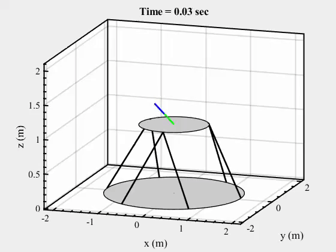
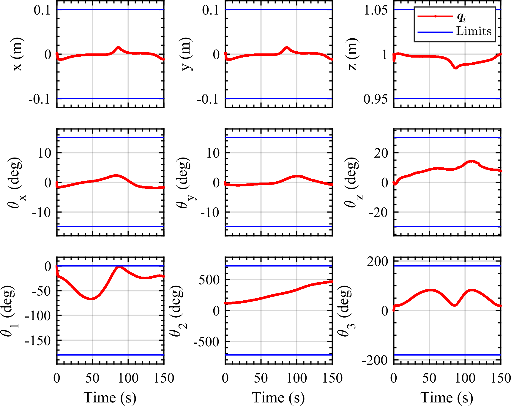
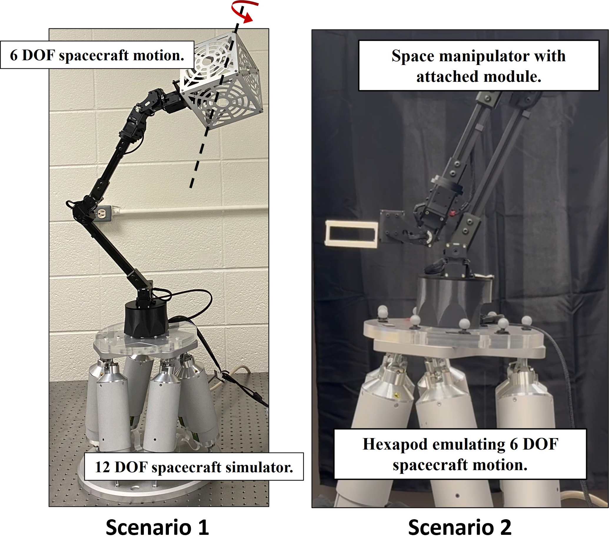

This project focuses on developing a ground-based spacecraft simulator for hardware-in-the-loop simulations of on-orbit servicing missions.



Experimental Analysis of an ISAM Mission to dock with a tumbling target satellite.
Modularity of the HIL Simulator
Experimental Analysis of an ISAM Mission to install a module in a tumbling target satellite.
[ASC 2021], [JAIS 2022], [ASC 2023], [SFMM 2025], [IEEE 2025]